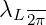

\(\@arrayleft \vcenter \bgroup \edef \:temp {\noexpand \MkHalign \@sharp {\the \tab@preamble }}\:temp \hline Mode number & Port 1 & Port 2 & Port 3 & Port 4 \\ \hline \)M_-2\( & \)0^\(\circ \) \(-180^\circ \) \(0^\circ \) \(-180^\circ \)
|
| \(M_{-1}\) \(0^\circ \) \(-90^\circ \) \(-180^\circ \) \(-270^\circ \) |
|
| \(M_{+1}\) \(0^\circ \) \(90^\circ \) \(180^\circ \) \(270^\circ \) |
|
| \(M_{+2}\) \(0^\circ \) \(180^\circ \) \(0^\circ \) \(180^\circ \) |
|
| |
|
|
|
|
|
|
|
|
|
|
|
|
|
|
|
|
|
|
|
|
\(\egroup \spewnotes \tab@restorehlstate \@checkend {tabular}\aftergroup \recall:afterend \expandafter \endgroup \if@endpe \@doendpe \fi \UseHook {env/tabular/after}\ifx \chk:pic \:UnDef \csname after:end\endcsname \expandafter \let \csname after:end\endcsname \:UnDef \PopStack \envn:list \:tempb \ifnum \:tempb =\n:list \else \def \:temp {tabular}\def \:tempa {thebibliography}\ifx \:temp \:tempa \else \:warning {\string \SaveEverypar 's: \:tempb \space at \string \begin {tabular} and \n:list \space \string \end {tabular}}\fi \fi \list:recall \else \let \chk:pic \:UnDef \fi \if@ignore \global \@ignorefalse \ignorespaces \fi \end {center} \end {table}
\newpage
All the usual features of \LaTeX are possible, such as merging cells, wrapping / aligning text etc ...
\begin {table}[!h] \begin {center} \caption {Role of design parameters in sinuous antennas.} \label {table:sinuous_design_roles} \def \arraystretch {1.5} \begin {tabular}{ | c | l | l | p{4cm} |} \hline Parameter & Denotes & Typical values & Role \\ \hline \)N\( & Number of arms & \)4\(, \)6\(, \)8\( & \parbox {4cm}{\vspace {1.5ex} Determines the number of modes obtainable.\vspace {1.5ex}} \\ \hline \)R_1\( & Outer radius & \)
to
λL _
3π∕4 Sets the lower
frequency limit. _____________________
τ Growth factor 0.6 to 0.9
Controls the ratio
between adjacent cells
and number of cells
given a fixed size. ______________________________________________
α Angular span
22.5∘ to
90∘ ___________________
δ Angular spacing
11.25∘ to
45∘These
two
parameters
together
control
the
angular
span,
interleaving
and
input
impedance
of
the
antenna. _\(\egroup \spewnotes \tab@restorehlstate \@checkend {tabular}\aftergroup \recall:afterend \expandafter \endgroup \if@endpe \@doendpe \fi \UseHook {env/tabular/after}\ifx \chk:pic \:UnDef \csname after:end\endcsname \expandafter \let \csname after:end\endcsname \:UnDef \PopStack \envn:list \:tempb \ifnum \:tempb =\n:list \else \def \:temp {tabular}\def \:tempa {thebibliography}\ifx \:temp \:tempa \else \:warning {\string \SaveEverypar 's: \:tempb \space at \string \begin {tabular} and \n:list \space \string \end {tabular}}\fi \fi \list:recall \else \let \chk:pic \:UnDef \fi \if@ignore \global \@ignorefalse \ignorespaces \fi \end {center} \end {table}
Finally, a large table, represented in landscape mode is shown in the next page.
\clearpage \begin {landscape} \begin {table}[!htbp] \begin {center} \caption {Review of performances of various broadband antennas.} \label {table:ant_summary} \def \arraystretch {1.5} \begin {tabular}{| l | p{4cm} | p{4cm} | p{4cm} | p{4cm} |} \hline \multicolumn {1}{|c|}{Aspect} & \multicolumn {1}{c|}{\pbox {4cm}{\vspace {1.5ex} Dipole-based designs (biconical, discone, ...)\vspace {1.5ex}} } & \multicolumn {1}{c|}{LPDA} & \multicolumn {1}{c|}{Spiral} & \multicolumn {1}{c|}{Sinuous} \\ \hline Frequency bandwidth & Typically max at around two octaves. & Comparable to dipole-based designs, extendable by increasing elements. & Ratios of up to \)40:1\( are possible. & Ratios comparable to spiral designs. \\ \hline Multiple Polarization & Only possible if crossed elements are added. & Only possible if crossed elements are added. & Possible with cavity-backing. & Possible with reconfigurable feed network. \\ \hline Planar & Planar versions possible with maximum extents of order \)\(\lambda /2\). 3-D array of dipole (\(\lambda /2\)) sized elements with
maximum extent determined by required bandwidth. Planar versions possible
with extent of order of \(\lambda \) Planar versions possible with extent of order of \(\lambda \)
|
| Radiation
pattern Cavity required for unidirectional radiation. Cavity
not required for unidirectional radiation. Cavity required for
unidirectional radiation. Cavity required for unidirectional radiation.
|
|
|
Chapter 4
Equations and code
The equation environment is the answer to all your complex greek formatting
requirements. \begin {equation} \label {eq:sinuous} \phi = (-1)^p\alpha _p\sin {\left [\frac {180^\circ \log {\left (r/R_p\right )}}{\log {\tau _p}}\right ]}, \quad R_{p+1} \le r \le R_{p} \end {equation}
I prefer to use the simple verbatim environment for capturing my code
segments.
r_total = zeros(0,0);
phi_total = zeros(0,0);
for p=1:length(R)-1
r = linspace(R(p),R(p+1)+eps,10000);
phi = ((-1)^p) * alpha *(sin(pi*log(r/R(p))/log(tau)));
r_total = horzcat(r_total,r);
phi_total = horzcat(phi_total,phi);
end
Bibliography
[1] R. Balakrishnan, K. Mouthaan, I. Hinostroza, and R. Guinvarc’h.
Dual-circular polarized planar array of connected sinuous antennas.
In Antennas and Propagation Society International Symposium
(APSURSI), 2014 IEEE, pages 941–942, July 2014.
[2] D. R. Hofstadter. Godel, Escher, Bach: An Eternal Golden Braid.
Basic Books, Inc., New York, NY, USA, 1979.
<div class="appendices">
Chapter A
Some additional data that might be useful
Appendices, if required, are added here.
</div>
|